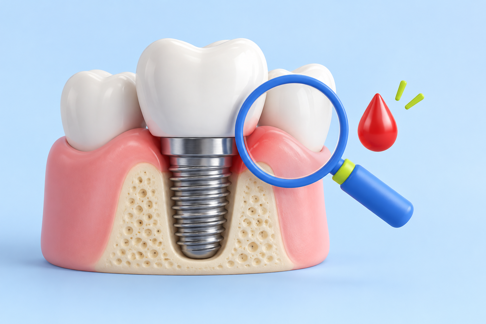
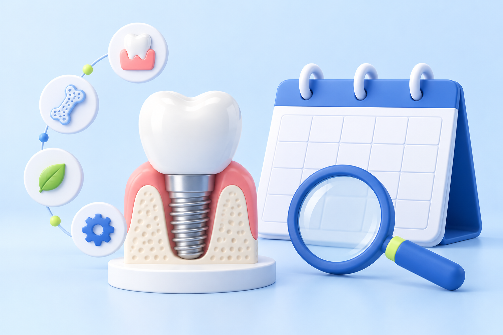
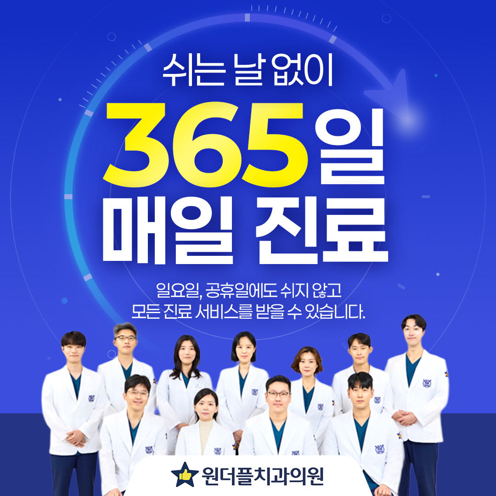
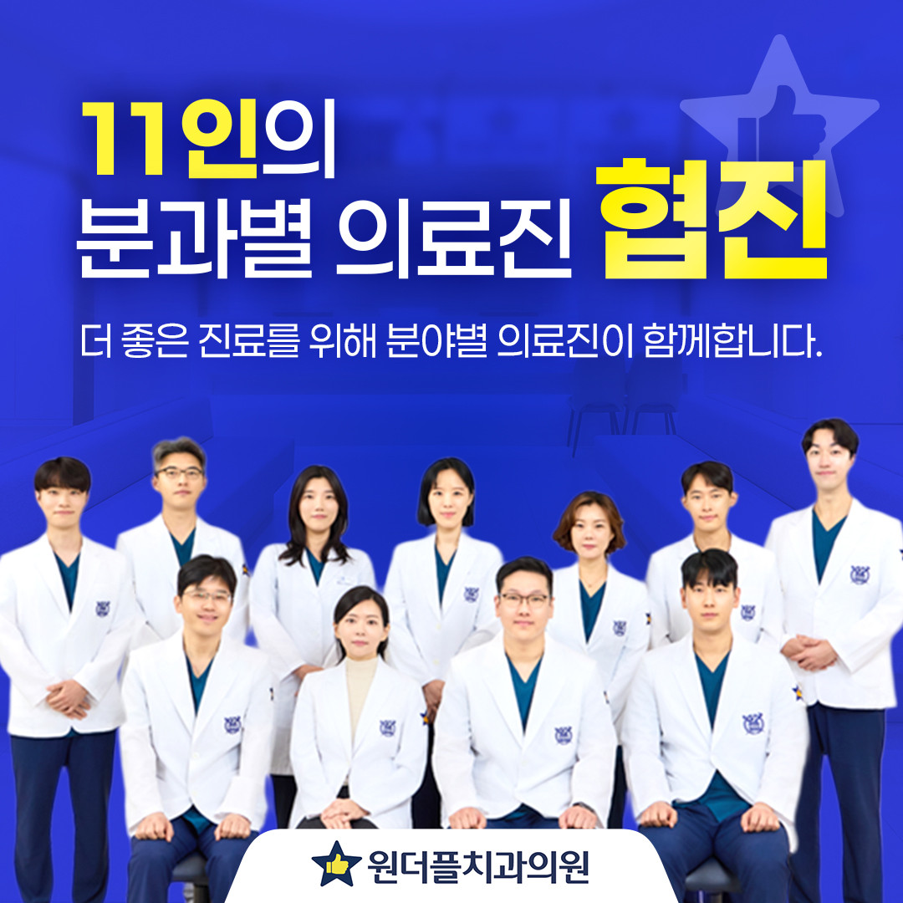
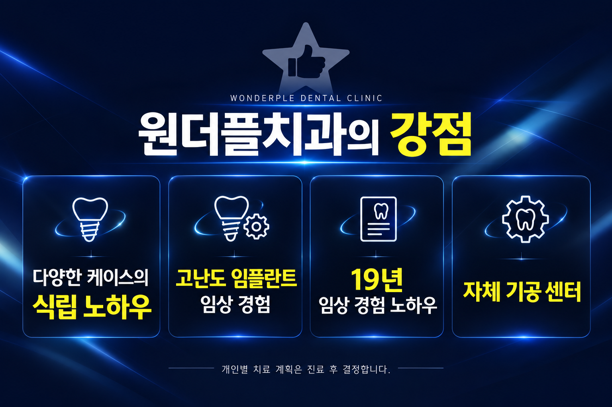
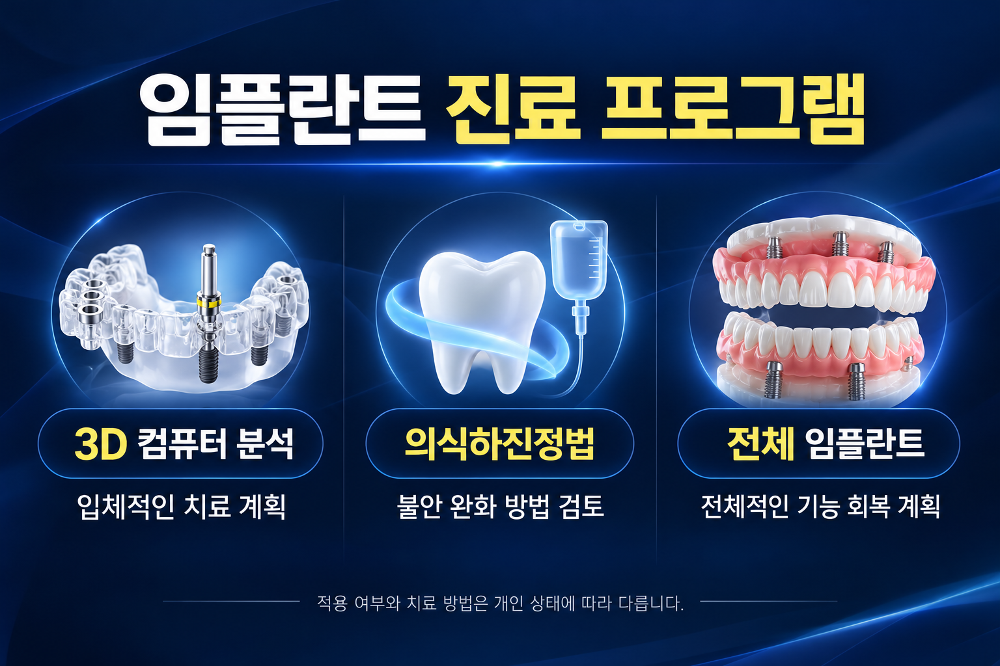
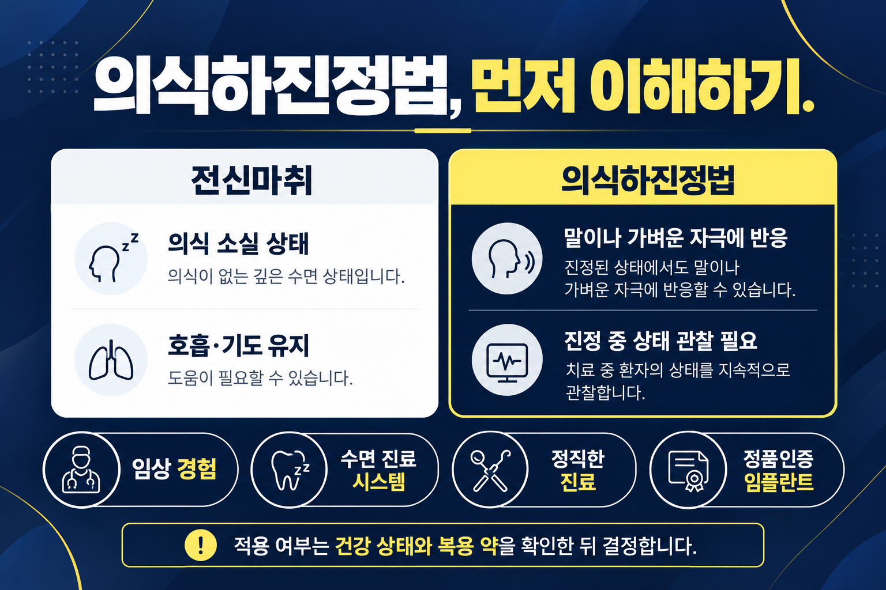
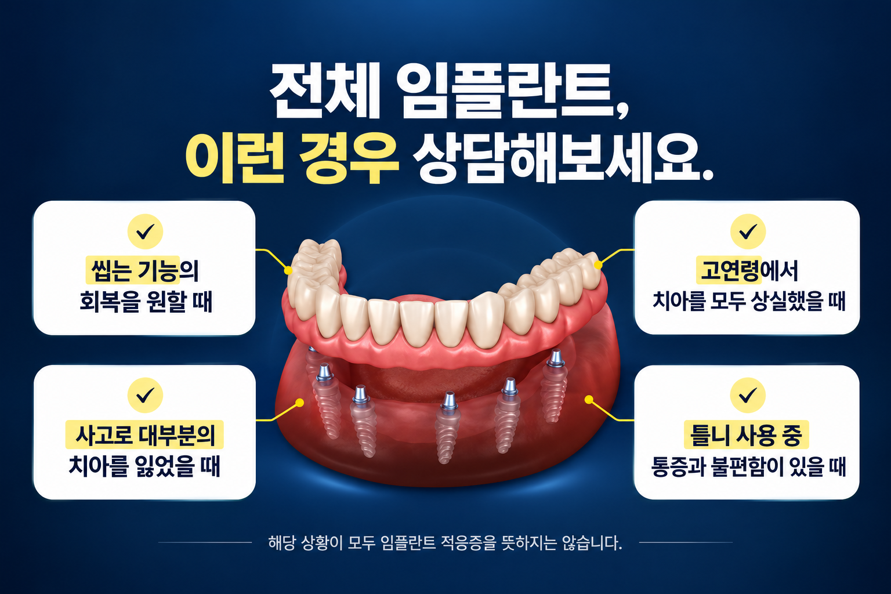
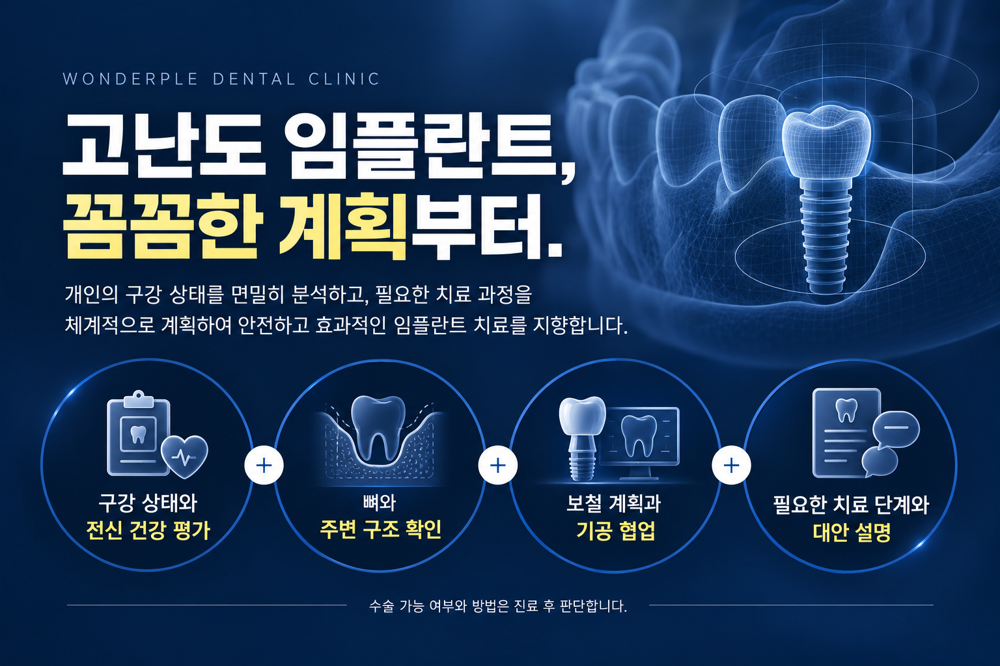

원더플치과 건강정보
임플란트 치료와 관리에 대해 자주 물어보시는 질문을 정리했습니다.

임플란트 잇몸 출혈, 피가 나면 교체해야 하나요?
임플란트 주변 잇몸에서 피가 나면 바로 교체해야 할까요? 출혈이 나타나는 이유와 잇몸 염증의 차이, 치과에 알려야 할 변화를 살펴봅니다. 평소 위생 관리와 정기 점검을 통해 현재 상태를 확인하는 데 필요한 내용을 정리했습니다.
작성 2026-10-08 · 더 읽기 →
임플란트 교체 시기와 수명, 언제 다시 치료해야 할까요?
임플란트는 몇 년마다 교체해야 할까요? 사용 기간만으로 판단하기보다 몸체와 보철물, 주변 잇몸과 뼈의 상태를 함께 살펴야 합니다. 교체를 고려하는 변화와 오래 사용하기 위한 일상 관리, 정기검진 때 확인할 내용을 정리했습니다.
작성 2026-10-08 · 더 읽기 →내 가족처럼 정성을 다해 치료합니다
환자의 걱정부터 듣는, 원더플치과의 환자 중심 임플란트 치료

임플란트가 필요하지만, 선뜻 결정하기 어려운 이유
치아가 없어 식사가 불편해도 치과 방문을 미루게 되는 이유는 사람마다 다릅니다. 수술과 통증에 대한 걱정, 치료 기간에 대한 부담, 내 몸 상태에서도 임플란트가 가능한지에 대한 불안이 함께 생길 수 있습니다.
치료의 첫 단계는 이런 마음을 충분히 이야기하는 것입니다. 원더플치과의원은 임플란트를 고민하는 분들이 자신의 구강 상태와 치료 선택지를 이해하고 결정할 수 있는 환자 중심 진료를 지향합니다. 임플란트가 필요한지부터 다른 치료 방법은 없는지까지, 상담에서 차근차근 확인하는 것이 중요합니다.

내 가족처럼 정성을 다해, 환자 중심의 임플란트 진료
“내 가족처럼 정성을 다해 치료합니다.” 원더플치과가 전하고자 하는 진료 철학은 환자의 입장에서 치료를 바라보는 것입니다. 치아만 살피는 것이 아니라 치료에 대한 두려움과 일상생활의 불편함도 함께 듣는 진료를 지향합니다.
임상 경험을 바탕으로 진료 선택지를 설명하고, 환자가 충분히 이해한 뒤 치료를 결정할 수 있도록 돕는 것이 진정성 있는 진료의 출발점입니다. 경제적인 부담 역시 상담에서 함께 고려할 요소입니다. 이 글에서는 가격이나 할인 대신, 환자에게 필요한 치료와 그 과정을 설명하는 병원의 방향을 소개합니다.

그래서 왜 원더플치과인가요?
원더플치과는 다양한 케이스의 식립 노하우와 고난도 임플란트 임상 경험을 강점으로 소개합니다. 병원이 안내하는 19년 임상 경험 노하우는 서로 다른 구강 상태를 살피며 치료 계획을 세우는 경험의 축적을 뜻합니다. 모든 의료진의 경력이 동일하다는 의미나 특정 치료 결과를 보장하는 의미는 아닙니다.
자체 기공 센터도 소개하는 강점입니다. 임플란트 치료에서는 턱뼈 안에 심는 몸체뿐 아니라, 그 위에 연결하는 보철물의 모양과 맞물림을 함께 고려합니다. 진료와 기공 과정의 협업은 환자에게 맞는 보철물을 계획하는 데 중요한 부분입니다. 개별 보철물의 제작 과정과 조정 일정은 상담에서 확인할 수 있습니다.

원더플치과의 임플란트 진료 프로그램
3D 컴퓨터 분석을 이용한 임플란트는 입체적인 영상과 분석을 치료 계획에 활용하는 프로그램입니다. 뼈와 주변 구조를 살피고 식립 위치를 계획하는 데 도움을 받을 수 있습니다. 디지털 분석 자체가 모든 수술의 위험을 없애거나 결과를 보장하는 것은 아닙니다.
의식하진정법 임플란트는 치과 치료에 대한 불안이 큰 분에게 진정 방법을 함께 검토하는 프로그램입니다. 적용 여부는 건강 상태, 복용 약, 필요한 치료 범위 등을 확인한 뒤 결정합니다.
전체 임플란트는 치아가 대부분 또는 모두 없는 상황에서 전체적인 씹는 기능과 보철 계획을 함께 검토하는 치료입니다. 모든 치아 자리에 각각 임플란트를 심는다는 뜻은 아니며, 식립 개수와 보철 형태는 환자의 상태에 따라 달라집니다.

의식하진정법, 전신마취와 어떻게 다른가요?
의식하진정법은 약물로 긴장과 불안을 줄이면서, 일반적으로 말이나 가벼운 자극에 반응할 수 있는 진정 상태를 목표로 합니다. 전신마취는 통증 자극에도 깨우기 어려운 의식 소실 상태이며, 호흡과 기도 유지를 위한 도움이 필요한 경우가 많습니다. 두 방법은 의식과 반응 수준이 다릅니다.
의식하진정법에서도 진정이 예상보다 깊어지거나 호흡에 영향을 줄 수 있어 상태 관찰과 대응이 중요합니다. 누구나 적용할 수 있는 방법은 아니며, 치료 전 병력과 복용 약을 확인하고 금식·귀가 등 의료진의 안내를 따라야 합니다.
원더플치과는 풍부한 임상 경험, 수면 진료 시스템, 정직한 진료, 정품인증 임플란트를 상담 시 살펴볼 요소로 소개합니다. 실제 사용 제품과 인증 자료, 담당 의료진, 진정 중 관찰 방식과 회복 절차를 확인하면 치료 과정을 이해하는 데 도움이 됩니다. 이 글에서는 특정 장비나 인력 배치를 임의로 단정하지 않습니다.

전체 임플란트 상담을 고려할 수 있는 경우
자연치아에 가까운 씹는 기능을 목표로 치료를 알아보는 분, 고연령에서 치아를 모두 상실한 분, 사고로 대부분의 치아를 잃은 분, 일반 틀니 사용 중 잇몸 통증이나 불편함이 있는 분은 전체적인 치료 계획을 상담할 수 있습니다.
다만 이런 상황에 해당한다고 해서 모두 전체 임플란트가 필요한 것은 아닙니다. 남아 있는 치아를 보존할 수 있는지, 뼈 상태와 전신 건강은 어떤지, 틀니 조정이나 다른 보철 치료가 가능한지도 함께 평가해야 합니다. 고령이라는 이유만으로 가능하거나 불가능하다고 판단하지 않으며, 씹는 느낌과 적응 과정에도 개인차가 있습니다.

고난도 임플란트도, 가능 여부부터 꼼꼼하게
원더플치과는 고난도 임플란트 수술을 진료 분야로 소개합니다. 일반적인 치료보다 계획이 복잡한 경우일수록 “가능하다”는 말만으로 결정하기보다, 어떤 조건에서 어떤 방법을 검토하는지 이해하는 것이 중요합니다.
개인의 뼈 상태, 주변 구조, 남아 있는 치아와 전신 건강에 따라 치료 방법과 필요한 단계가 달라질 수 있습니다. 다양한 식립 경험과 기공 협업을 바탕으로 환자에게 맞는 계획을 검토하되, 실제 수술 가능 여부와 범위는 진료 후 판단합니다.
원더플치과에서 상담해보세요. 걱정되는 점과 원하는 치료 목표부터 이야기하고, 내 상태에 맞는 방법을 확인하는 것이 치료를 시작하는 첫걸음입니다.